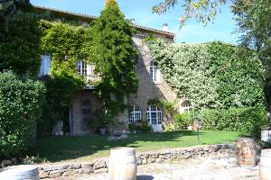
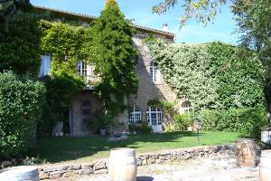
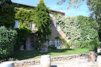
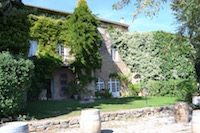

Important Before you proceed open this web page (ex3.html) for editing in Visual Studio Code.
Task One
Instructions: If you have completed Exercise 1 correctly, your new,
cropped, resized and optimised version of
band-400.jpg - saved to the optimised folder - should
be displayed above. If not, check the file name and location.
Details:
Original size 549kb, 2880px × 2151px
Your
optimised version should be something like: size 17kb, width 400px.
Edit the code in this page (ex3.html), adding the
correct height and width dimensions to the above
<img> element.
Task Two
Instructions: If you have completed Exercise 2 correctly, your new,
cropped, resized and optimised version of
guitar-500.jpg - saved to the optimised folder - should
be displayed above. If not, check the file name and location.
Details:
Original size 1.6MB, 5184px × 3456px
Your
optimised version should be something like: size 22kb, width 500px.
Edit the code in this page (ex3.html), adding the
correct height and width dimensions to the above
<img> element.
Choose your preferred editor
For the remaining tasks optimise the images provided as instructed using either Figma, Pixlr and Tiny JPG. You might also want to try Photopea or Squoosh (see Moodle for more details).
Task Three
Instructions for img_three_original.jpg: Crop this image as illustrated. Resize width to 400px, optimise for the web, save as img_three.jpg in the optimised folder. Once completed the image should now display above.
In your editor, add some alt text without repeating the caption. Update the height and width attributes with the new values.
Update the Details:
Original size 920kb, width
1280px
optimised size 20kb, width 452px.
Task Four
Instructions for img_four_original.jpg: Crop this image as illustrated. Resize width to 800px, optimise for the web, save as img_four.jpg in the optimised folder.
In your editor, add some alt text without repeating the caption. Update the height and width attributes with the new values.
Update the Details:
Original size 592kb, 1920px
optimised size 18.3kb, width 800px.
Task Five
Instructions for img_five_original.jpg: No need to crop this time. Resize width to 900px, optimise for the web, save as img_five.jpg in the optimised folder. What can you get this image down to without destroying the quality?
In your editor, add some alt text without repeating the caption. Update the height and width attributes with the new values.
Update the Details:
Original size 2.29mb, width
1920px
optimised size 64.8kb, width 900px.
Task Six
 

 

Instructions for images six, seven and eight: Crop as necessary. Resize each image to a width of 300px, optimise for the web, save as img_six.jpg, img_seven.jpg, img_eight.jpg respectively in the optimised folder.
In the editor add some alt text without repeating the caption. Update the height and width attributes with the new values.
Update the Details for each image:
-
Image 6
Original size 1.66mb, width 1920px
optimised size 17.3kb, width 300px. -
Image 7
Original size 1.41mb, width 1920px
optimised size 14.2kb, width 300px. -
Image 8
Original size 2.41mb, width 1920px
optimised size 18.1kb, width 300px.
Task Seven
Insert a photo relevant to your life.
Instructions:
- Take the photo with your phone.
- Put the image in the
originalsfolder. - Optimise the image to best fit this page (image quality, dimensions, file size).
-
Save the optimised image to the
optimisedfolder asmy-image.jpg -
Add the relevant
alt,heightandwidthattributes. -
Edit the
figcaptionto fit your image - don't repeat the alt text.
Using your own images. Please be mindful of copyright and privacy. Please make sure the subject is suitable for submission as an academic assignment. If in doubt, ask the tutors.
Validate this page
Before submitting, ensure that this page (the HTML) validates.